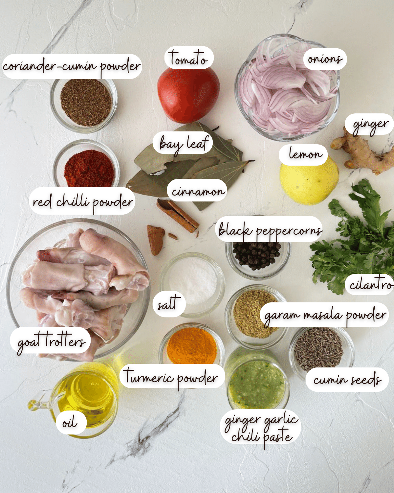
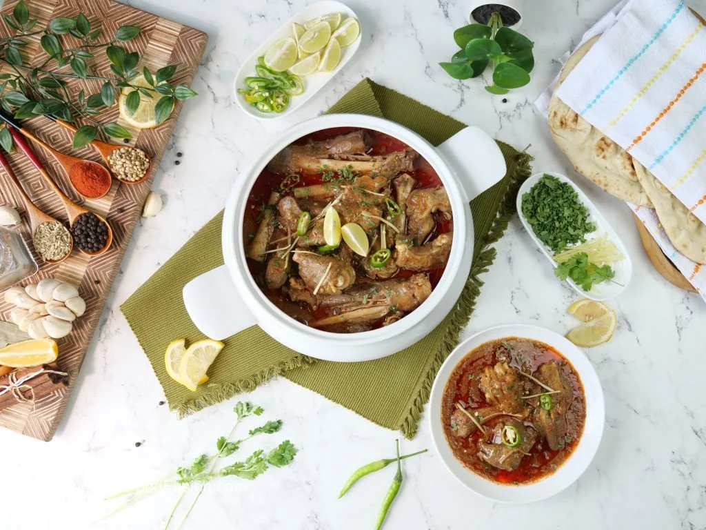
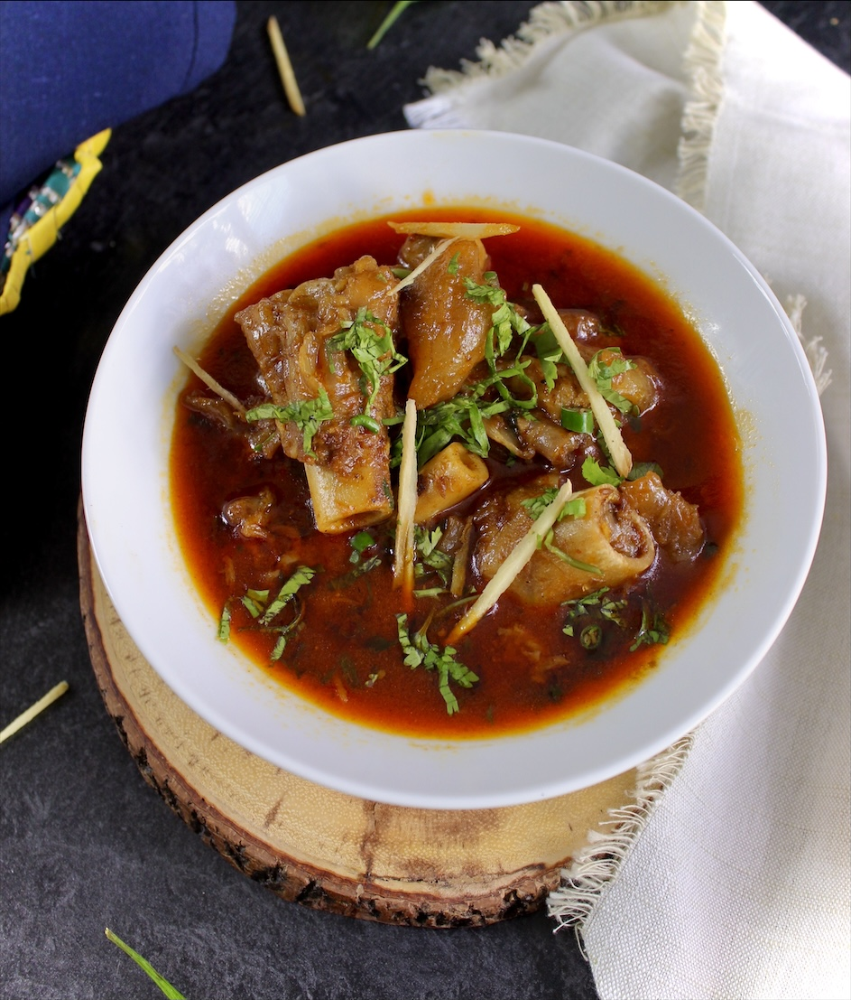

Ingredients:
- 4 cow or goat trotters
- 1 onion, sliced
- 2 tomatoes, chopped
- 3 cloves garlic, minced
- 1-inch ginger, grated
- 2 teaspoons garam masala
- 1 teaspoon red chili powder
- 1/2 teaspoon turmeric powder
- 1/4 cup oil or ghee
- Salt to taste
Instructions:
- Clean and wash the trotters thoroughly.
- In a large pot, heat oil or ghee over medium heat.
- Add sliced onions, minced garlic, and grated ginger. Sauté until golden brown.
- Add chopped tomatoes and cook until they turn soft and mushy.
- Add garam masala, red chili powder, turmeric powder, and salt. Mix well.
- Add the cleaned trotters to the pot and stir to coat them with the spice mixture.
- Add enough water to cover the trotters completely.
- Cover the pot and let it simmer on low heat for 4-5 hours, or until the trotters are tender and the
gravy thickens.
- Once done, garnish with chopped coriander leaves and serve hot with naan or rice.
Back to Home